Intro to Machine Learning
I'm Jamis
Goals
- Fast, brief, light intro to supervised learning
- Meant to pique interest, not to give an in-depth understanding
- Half math, half code
Download scikit-learn
$ pip install -U pip
$ pip install -U numpy scipy scikit-learn
The 3 Categories of ML
- Supervised Learning: Given data composed of inputs corresponding to outputs, learn a general rule for the mapping.
- Unsupervised Learning: We are given inputs but the outputs are unknown and it is up to us to discover structure.
- Reinforcement Learning: Interact with a dynamic environment to achieve some goal.
Supervised Learning

When the target variable that we’re trying to predict is continuous, we call the learning problem a regression problem. When y can take on only a small number of discrete values, we call it a classification problem.
1D Regression Example Data
Model Price as a function of Area\[ f(Area) = Price \] 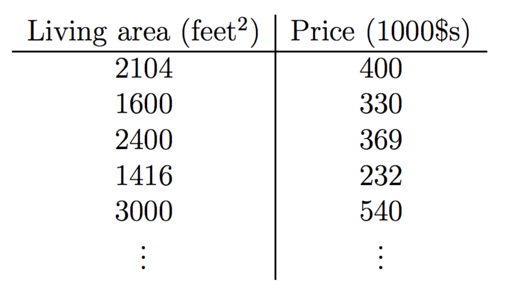
Input Data
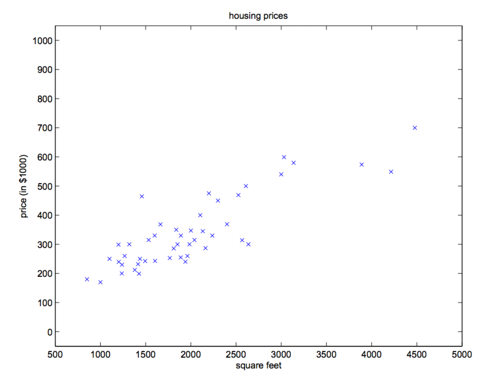Model with a Line
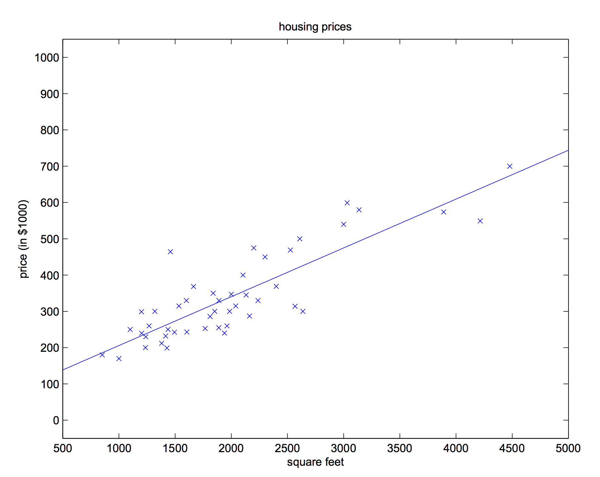Hypothesis: a Line!
A line provides a good fit to the input data
Remember me? The equation of a line!
\[ y = mx + b \]
Re-written with different syntax ...
\[ h(x) = \theta_1 x + \theta_0 \]
Re-arranged ...
\[ h(x) = \theta_0 + \theta_1 x \]
\( \theta \)s are called the parameters or weights of our model
Supervised Learning
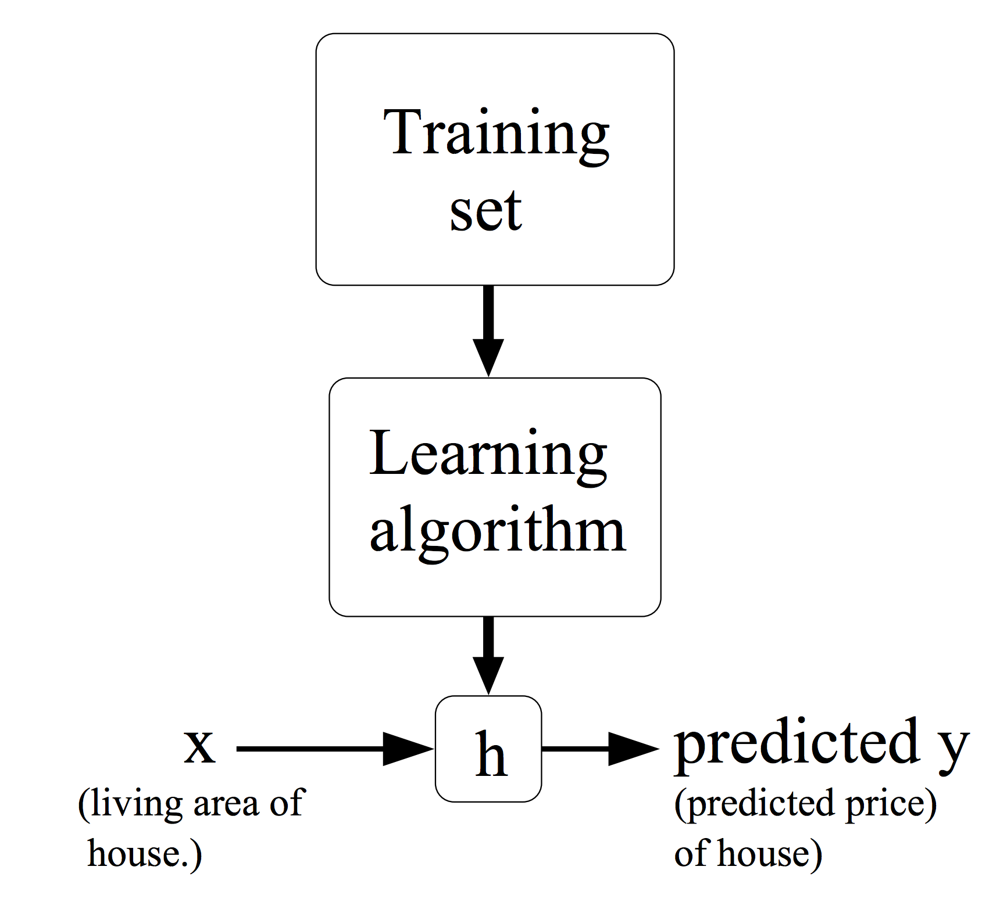2D Regression Example
Model Price as a function of both Area and Bedrooms\[ f(Area,Bedrooms) = Price \] 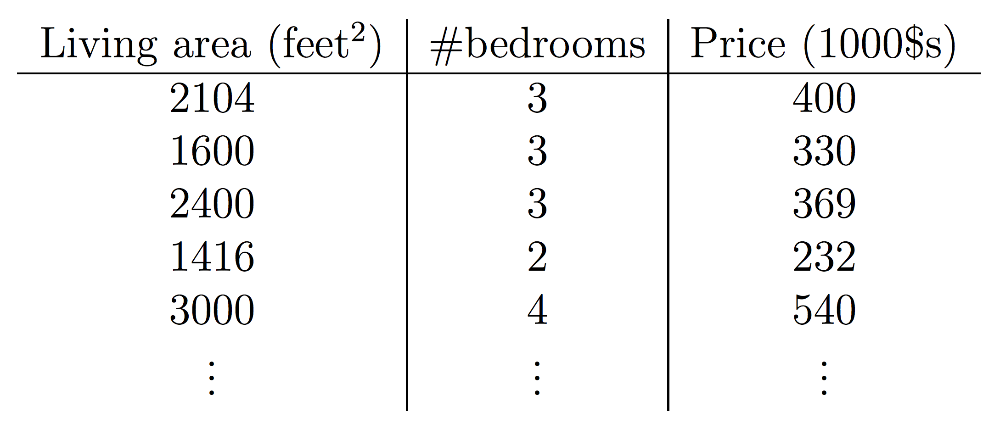
Model with a plane!
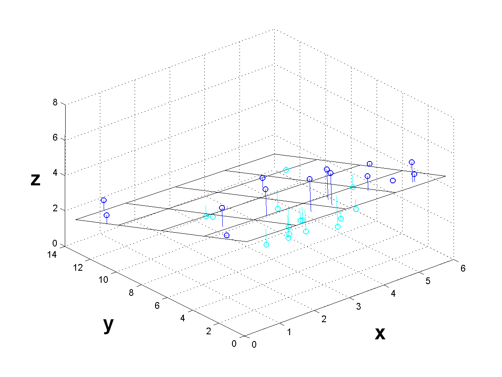What about more dimensions?
Hypothesis: a Hyperplane!
A Line ...
\[ h(x) = \theta_0 + \theta_1 x \]
A plane ...
\[ h(x) = \theta_0 + \theta_1 x + \theta_2 x \]
A hyperplane!
\[ h(x) = \theta_0 + \theta_1 x_1 + \theta_2 x_2 \dots \theta_n x_n \]
Let \(x_0 = 1\) and condense. Don't let the linear algebra scare you!
\[ h(x) = \sum_{i=0}^n \theta_i x_i = \theta^T x\]
Least Squares Cost Function
\[ J(\theta) = \frac{1}{2} \sum_{i=0}^m (h_{\theta}(x^{(i)}) - y^{(i)})^2 \]
Simply quantifies the total error between all input
data points and the hypothesis function.
If we minimize this error we'll have the optimal weights \(\theta\)!
Find Best Fit: Gradient Descent
Minimize error between the model and data: \[ \theta_j = \theta_j - \alpha \frac{\partial}{\partial \theta_j} J(\theta) \] 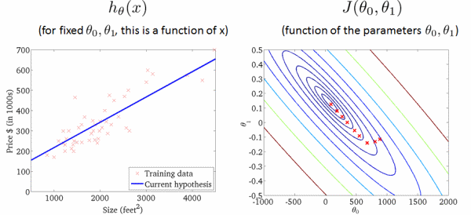Supervised Learning
Learning is merely minimizing error between our hypothesis function and the training set. We can then make predictions using \(h\).
Linear Regression
>>> from sklearn import linear_model
>>> classifier = linear_model.LinearRegression()
>>> X = [[0], [1], [2]]
>>> y = [ 0, 2, 4]
>>> classifier.fit(X,y)
LinearRegression(copy_X=True, fit_intercept=True, n_jobs=1, normalize=False)
>>> classifier.coef_
array([ 2.])
>>> new_data = [[3],[4]]
>>> classifier.predict(new_data)
array([ 6., 8.])
Polynomial Regression
\[ h(x) = \theta_0 + \theta_1 x_1 + \theta_2 x_2 + \theta_3 x_1 x_2 + \theta_4 x_1^2 + \theta_5 x_2^2 ... \] 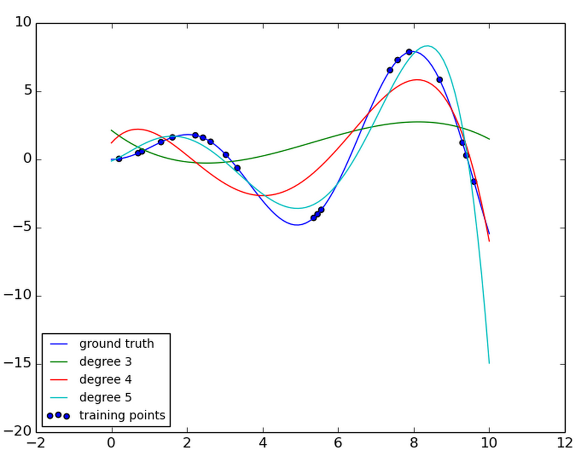Problem: Overfitting
As model complexity increases, accuracy of approximating the ground truth decreases.
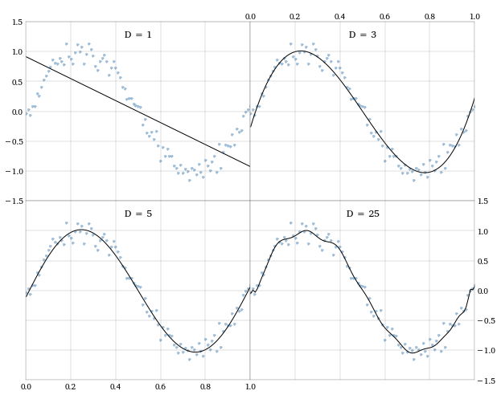Solution: Regularization
Penalize extreme parameter values to reduce model complexity.
Well Known: Lasso, Ridge, ElasticNet
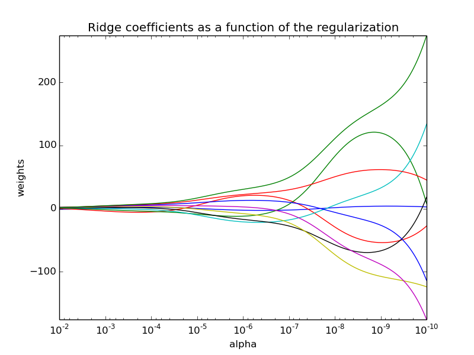Regularized
Polynomial Regression
print(__doc__)
# Author: Mathieu Blondel
# Jake Vanderplas
# License: BSD 3 clause
import numpy as np
import matplotlib.pyplot as plt
from sklearn.linear_model import Ridge
from sklearn.preprocessing import PolynomialFeatures
from sklearn.pipeline import make_pipeline
def f(x):
""" function to approximate by polynomial interpolation"""
return x * np.sin(x)
# generate points used to plot
x_plot = np.linspace(0, 10, 100)
# generate points and keep a subset of them
x = np.linspace(0, 10, 100)
rng = np.random.RandomState(0)
rng.shuffle(x)
x = np.sort(x[:20])
y = f(x)
# create matrix versions of these arrays
X = x[:, np.newaxis]
X_plot = x_plot[:, np.newaxis]
plt.plot(x_plot, f(x_plot), label="ground truth")
plt.scatter(x, y, label="training points")
for degree in [3, 4, 5]:
model = make_pipeline(PolynomialFeatures(degree), Ridge())
model.fit(X, y)
y_plot = model.predict(X_plot)
plt.plot(x_plot, y_plot, label="degree %d" % degree)
plt.legend(loc='lower left')
plt.show()
Model Assessment:
Cross Validation
Split data into k "folds"; train model then assess error on validation set (\(\frac{1}{k}\) of the data); average error across all sets

Cross Validation
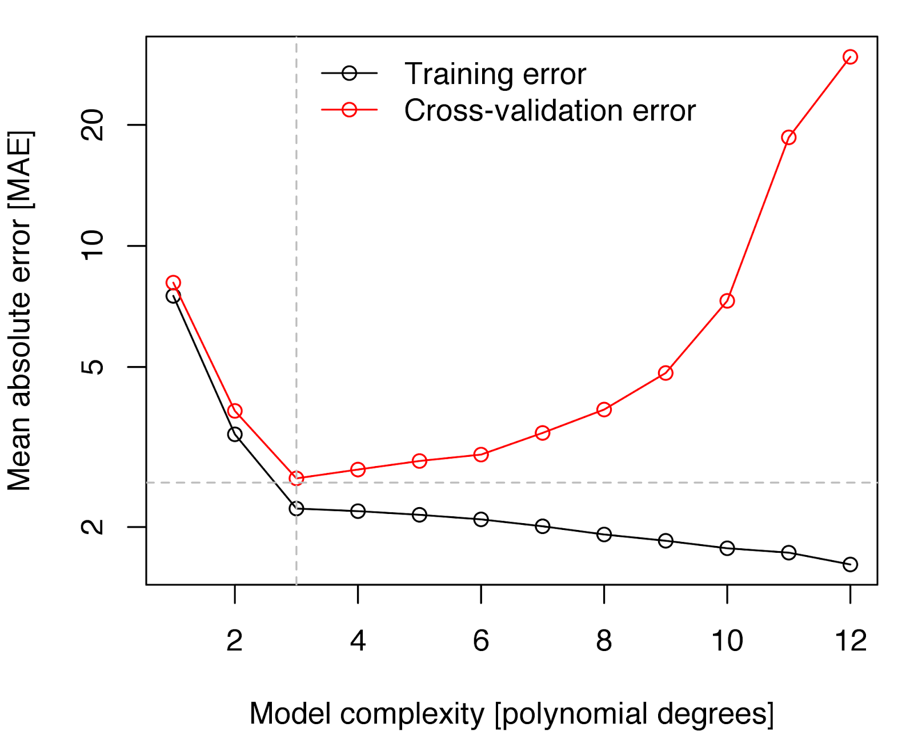iPython Data Exploration
... cut to terminal
Full California Housing Example using Gradient Boosted Regression Trees
Classification
- Logistic Regression
- Support Vector Machines
- Perceptrons
- Linear Discriminant Analysis
Mmmm Machine Learning
- scikit-learn Tutorials
- Stanford Coursera
- Machine Learning at Scale:
- Spark
- Hadoop too but meh :)
- Neural Net Libraries:
- Hacker's Guide to Neural Networks (Andrej Karpathy is amazing)
- Theano (Python, Symbolic Syntax, University of Montreal)
- Torch (Lua, NYU, DeepMind, FaceBook)
- Caffe (C++/Python interface, Berkeley, Google DeepDream)